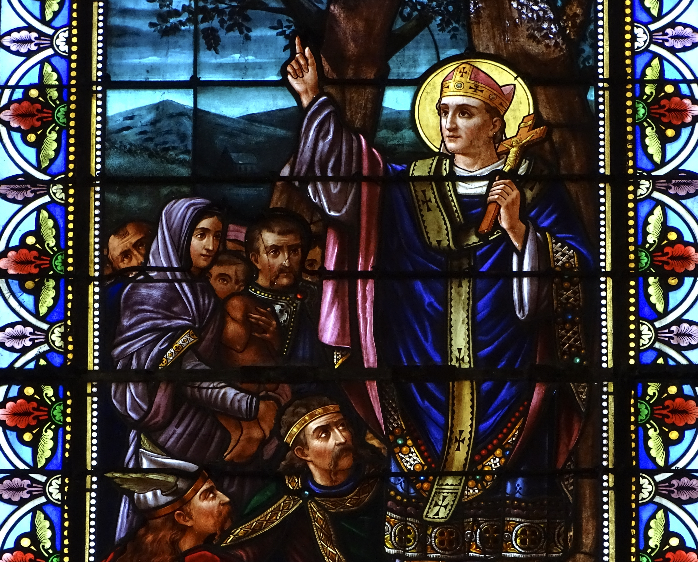

Giristinotasunaren sortzea Eskual Herrian Irudia gehitzekoimages/naissance-chretiente.jpgGiristinotasunaren sortzea Eskual Herrian
Naissance de la chrétienté au Pays Basque Illustration à ajouterimages/naissance-chretiente.jpgNaissance de la chrétienté au Pays Basque